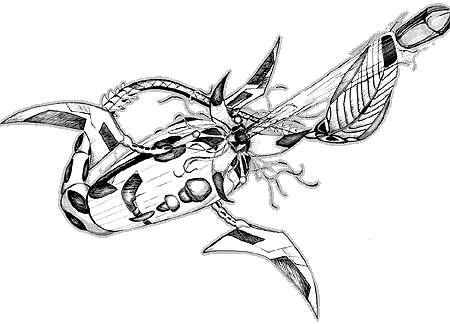

The following material is from THE THIRD INVID
WAR, a fan supplement by Dave
Deitrich and Chris Meadows. Please
feel free to use, copy, and distribute it as you see fit. All we ask is that
you give proper credit to us and do not claim that it is your own work.
Comments and suggestions are welcome.
Mecha design and illustration by AMY BORDEN
(borden@alexia.lis.uiuc.edu).
THE LEVIATHAN INORGANIC

BACKGROUND
Prior to the Third Invid War the high seas had traditionally been a safe haven
and refuge for resistance fighters. Since the flower of life will not grow
underwater the Invid have had little interest in the Earth's seas and failed
to patrol them with any great frequency. Therefore any resistance group who
was lucky enough to find a stable base in the ocean or a large lake could
escape pursuit and detection by fleeing out to sea. A number of resistance
factions operated this way during the Second and early Third Invid Wars,
working from abandoned oil rigs, old supertankers or even the occasional
submersible military ship. Such groups were extremely successful even though
they were limited to attacking targets not far inland from the shoreline.
In late 2044 this changed with the introduction of the Leviathan Inorganic
into Earth's oceans. Initially little was known about this new Invid weapon,
except that it was seaborne and VERY powerful. Entire resistance bases on the
ocean were destroyed in minutes with no survivors, giving the resistance and
the REF very little information to go on regarding this new threat. It wasn't
until 2045 when a Leviathan was successfully destroyed and the wreckage
examined did the resistance finally learn about the new inorganic.
The Leviathan is a monstrous creation. Over 350 ft (106.7 m) long, the
inorganic resembles a giant segmented worm with fins and a large, flat tail.
When preparing to attack, however, the "fins" extend into large vibro-blade
scythes, and numerous tentacles extend around an ultra-sharp beak-like mouth
concealing a large torpedo launcher in the center of the beast. In combat the
Leviathan acts like an enraged whale, constantly slamming into its target
while using its scythes and tail to tear the ship or base apart. The tentacles
and beak are primarily used for grabbing smaller boats and mecha, which are
dragged underwater and quickly torn to pieces. If distance attacks are
necessary, the Leviathan can respond with a trio of blue-green laser cannons
(attuned for underwater firing) surrounding the beak of the mecha, or by
firing torpedoes out of its mouth. If attacked by multiple enemies underwater,
the inorganic has one final attack it can rely on. The tail of the mecha can
generate an extremely powerful electric shock that can overload and disable
mecha underwater, as well as possibly killing the pilots.
The Leviathan is propelled by a magneto-hydrodynamic drive that uses
superconducting materials to propel water through itself, thus being able to
achieve impressive speeds while being virtually silent underwater. The tail
and body styling of the mecha is designed to create perfect laminar flow
around the Leviathan's body, allowing it to reduce water resistance against
its body when travelling at high speeds. The inorganic is equipped with both
active and passive sonar for tracking targets, as well as normal vision and
protoculture sensors for combat. Like all of the second generation inorganics,
the Leviathan does not rely on an Invid brain for direction. In fact, the
monstrous creation was designed specifically to operate for extended periods
of time in large bodies of water without any communication or direction from
an Invid base. The Leviathan possesses a moderate degree of intelligence, and
if it encounters an ocean-borne force that it feels is superior to itself it
will stalk the prey and look for signs of weakness, while calling out for
other Leviathans to help it destory the target. Leviathans will also follow
orders given by Stage 6 Invid and are occasionally called in to help in
assaults against ocean targets.
Leviathans were first introduced by the Stage 6 Invid in late 2044 in the
South Pacific, where they proved very effective and were quickly put into
action in other locations as well. By 2045 they were found in all the oceans
of the world, as well as in other large bodies of water such as the Great
Lakes in North America. Most of the time the monsters operated alone,
occasionally joining together in packs for brief periods of time or returning
to base for repair and resupply after long battles. Leviathans can operate for
years without support, and several surviving inorganics continued to strike at
ships years after the Third Invid War ended. The last known Leviathan on Earth
was destroyed by a USNA naval fleet with RGF assistance in 2057.
RPG STATS
Invid Name: "Gorstanna" REF Nickname: "Leviathan"
Vehicle Type: Submersible Anti-Naval Robot
Crew: None.
M.D.C. BY LOCATION
Front Beak Blade (3) 100 each
Front Tentacles (21) 35 each
Blue-Green Laser Cannons (3) 75 each
[1] Torpedo Launcher 120
[2] Main Body Segment 750
Forward 1/2 Tail 550
Rear 1/2 Tail 350
[3] Flat Tail End 500
Vibro-Scythes (3) 350 each
Scythe Arms (3) 150 each
NOTES:
- [1]
- Destroying the Torpedo Launcher signifies that the exit port for the
torpedoes has been sufficiently damaged to the point where the Leviathan
can no longer launch torpedoes. The actual torpedo mechanism and the torpedoes
themselves are in the center of the inorganic and cannot be attacked without
destroying the main body of the mecha.
- [2]
- This is the main body for the Leviathan, which contains the brain,
engines, sensors, and most of the weapons of the inorganic. Depleting the
MDC of the main body segment will cause the Leviathan to self- destruct,
doing 5D6x10 M.D. to everyone in a 400 ft (120 m) radius around the mecha.
- [3]
- Destroying the flat tail end of the Leviathan will deprive it of its
shock attack and reduce the overall speed of the creature by 35% due to
problems with stability. Destroying the front or rear halves of the tail
of the Leviathan will reduce the mecha's speed by 55%.
SPECIFICATIONS
- Swimming:
- The Leviathan can propel itself under water at speeds up to 70 knots (81
mph/130 kmph) and can dive up to 10 miles below the surface.
- Land/Air/Space:
- The Leviathan is specifically designed for underwater operation and
cannot perform effectively in any other environment. On land the inorganic
will be unable to move, and in space it will merely flail about with no
means of propulsion.
- Width:
- 40 ft (12 m) with fins/scythes retracted into main body. 150 ft (45
m) with scythes at maximum extension.
- Length:
- 365 ft (109.5 m) from beak to tail.
- Weight:
- 350 tons
- Cargo:
- None, though the Leviathan can capture and tow over 350 tons of weight
if necessary.
Abilities:
- Swimming - 95%
- Tracking: Humanoid, Mecha, or Sea Vehicle - 60%
- Tracking: Protoculture Powered Mechanism - 85%
- Navigation: Air, Land, Water - 90%
- Detect Ambush - 45%
- Detect Concealment - 50%
- Protoculture Sensor - Range: 3 miles (4.8 km)
- Passive Sonar - Range: 40 miles (64 km)
- Active Sonar - Range: 10 miles (16 km)
- Thermal (passive infrared sight) - Range: 1000 ft (305 m)
- Nightvision (passive night sight) - Range: 4000 ft (1220 m)
- External Audio Pickup (above water) - Range: 1200 ft (366 m)
- Audio/Video Communications - Range: 200 miles
WEAPON SYSTEMS
- VIBRO-SCYTHES: The main weapon of the Leviathan are the three huge
vibro-blade scythes that are connected to the main body of the inorganic. In
travel mode the scythes are drawn into the body, but in combat they can extend
up to 50 feet away from the inorganic in order to swipe at attackers.
- Primary Purpose: Physical Assault
- Secondary Purpose: Defense
- Damage: 6D6 M.D. when vibro blades are not active, 6D6x10 M.D.
when active.
- Rate of Fire: The Leviathan can attack up to three times per
round with the vibro-scythes (once per blade).
- Bonuses to Strike: Protoculture targeting bonuses only.
- BLUE-GREEN LASER CANNONS (3): Arranged around the central mouth of
the Leviathan are three large laser cannons for energy attacks above or under
water. The cannons are limited in range under water, but are still powerful
enough to provide effective weapons in a fight. Above water the laser cannons
are devastating, and the Leviathan will often surface during a raid to fire at
ships or mecha trying to attack from above. The beams generated by these
lasers are tuned to the blue-green area of the spectrum to increase their
range and effectiveness underwater.
- Primary Purpose: Assault
- Secondary Purpose: Anti-Surface, Anti-Aircraft
- Range: 5,000 ft (1,515 m) above water, 1,000 ft (305 m) under
water.
- Damage: 6D10 M.D. per shot.
- Rate of Fire: Up to three shots per laser, per melee round.
- Payload: Unlimited
- Bonuses to Strike: +1 to strike, plus protoculture targeting
bonuses.
- TORPEDO LAUNCHER: For underwater attacks the Leviathan is armed
with a torpedo launcher mounted along the center of its body. The torpedo
launcher fires underwater missiles guided by a sophisticated sonar and
protoculture targeting system, making them difficult to avoid once a lock-on
has been achieved. Fortunately the missiles are only moderately fast and can
be shot out of the water if the target is lucky. Furthermore the Leviathan
carries only a limited number of missiles, and once depleted must return to
base for resupply.
- Primary Purpose: Anti-Warship, Anti-Submarine
- Secondary Purpose: Demolition
- Range: 3 miles (4.8 km)
- Speed: 55 knots (64 mph/102 kmph) underwater
- M.D.C. of Missile: 15
- Damage: 1D4x100 M.D.
- Rate of Fire: Once per round
- Payload: 12 torpedoes
- Bonuses: +4 to strike, plus protoculture targeting bonuses.
+2 to dodge.
- ELECTRIC SHOCK: If desperate the Leviathan can generate a strong
electric shock from its body that can damage and incapacitate mecha and other
attackers around the inorganic. The shock causes damage to mecha by
overloading electrical systems and burning out sensors and computers, and can
occasionally even penetrate armor and devliver a nasty shock to the pilot.
Unprotected persons in the water are usually killed instantly by the shock.
Due to the drain this attack causes on the Leviathan's own systems, it will
use this ability only in desperation.
- Primary Purpose: Defense
- Range: 300 ft (90 m) radius
- Damage: 1D6x10 M.D. to everything within the radius of the shock.
In addition every target mecha must roll 1D6 and consult the table below
for possible additional damage from the electric shock.
- no additional effect.
- no additional effect.
- Sensors and targeting systems short out. Pilot must rely on visual
displays only and loses any combat bonuses from tracking systems.
- Servo motors in mecha limbs short out. 1D4 limbs (determined by GM)
becomes immobilized and unusable due to loss of motor control.
- Onboard computer crashes. Cyclones may still move normally, but
Veritechs and other larger mecha are immobilized for 1D6 melee rounds
while the computer reboots itself. The pilot may make no attacks or
defend himself during these rounds.
- Pilot takes 6D6 S.D.C. damage from electric overload (armor does not
help)
- Rate of Fire: Once. After generating a shock the Leviathan will be
unable to use its laser cannons for 1D6+4 minutes after the
attack. The inorganic will not be able build up enough power for an
additional shock for 30 minutes after an attack.
- Payload: Essentially unlimited
- Bonuses to Strike: Instantly affects all mecha in target area.
Parry/Dodge is NOT possible.
- HAND-TO-HAND COMBAT. The Leviathan has a number of physical
"hand-to-hand" attacks available to it for use in close combat. In addition
to the three vibro-scythes, the inorganic may use its tentacles and beak to
capture and tear apart mecha and small boats, or it may use its body as a
weapon to ram a target. Resistance fighters who are foolish enough to engage
a Leviathan in close combat rarely survive. The smaller tentacles have an
effective P.S. of 55, and the beak has a P.S. of 75.
- Attacks Per Melee: 5
- Hand to Hand Bonuses: +2 to strike, +3 to parry, +2 to dodge
when moving at speeds above 40 mph (64 kmph), +1 to roll with impact.
- Damage:
- Crush/tear with tentacles: 1D4 M.D. per tentacle used.
- Tear with beak: 5D6 M.D.
- Tail Slap: 4D6 M.D.
- Body Slam: 6D6 M.D.
- Charge: 4D6 M.D.
- Full-speed charge (takes 1 full round to get up to speed): 2D6x10 M.D.